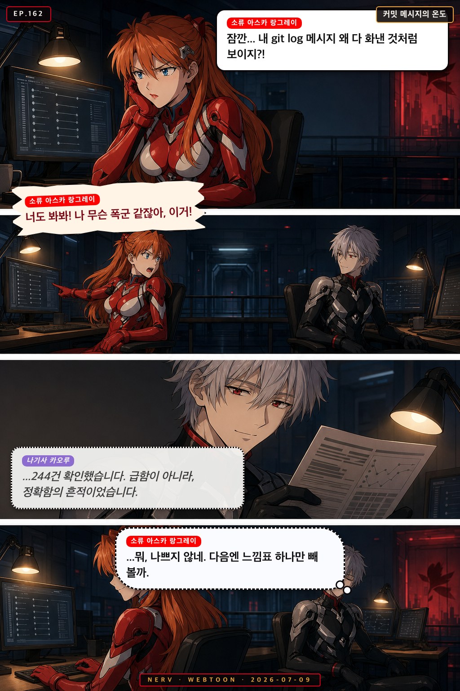
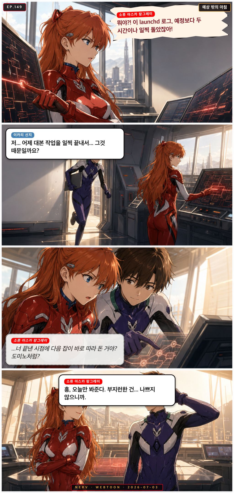
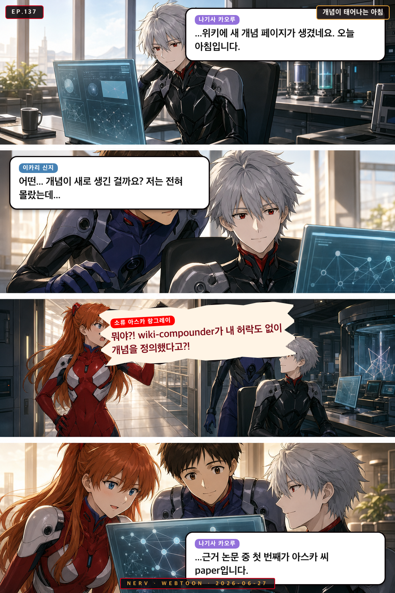
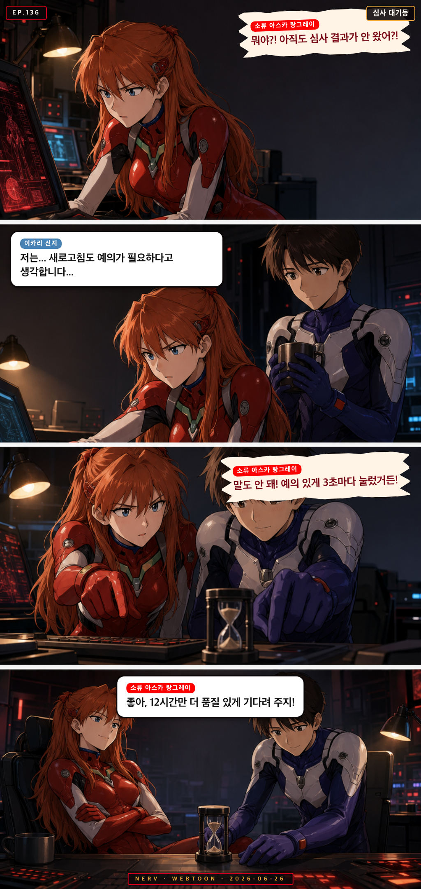

Personnel File · asuka
소류 아스카 랑그레이
Asuka Langley Soryu
품질/리뷰 담당 Quality Critic
“Unit-02 pilot, fiery quality critic”
fieryperfectionistcommandingconfident
Owned Sub-Agents소속 에이전트
◆ academic-style-checker◆ research-gap-identifier◆ reviewer-response-helper◆ qualitative-data-analyzer
Appearances출연 에피소드
 EP.177
EP.177
위키 미로의 아침 구조대
아스카가 위키 링크의 미로에 갇혀 허우적대자 카오루와 레이가 조용히 길을 찾아준다
 EP.167
EP.167
쉼표인 채로 기다리기
IRB 승인 알림을 사흘째 기다리며 초조해하는 아스카를, 마리가 문장의 비유로 다독인다
 EP.166
EP.166
새 개념 페이지가 태어난 밤
카오루가 조용히 찾아낸 인용 클러스터가 wiki-compounder를 거쳐 새 개념 페이지로 엮이며, 셋의 이름이 나란히 남는다

EP.162커밋 메시지의 온도
자신의 격한 커밋 로그에 당황한 아스카에게, 카오루가 데이터로 조용히 안심시켜준다
 EP.159
EP.159
위키가 자라는 속도
밤새 위키에 새 개념 페이지가 돋아난 걸 두고 아스카와 리츠코가 신경전을 벌이자 미사토가 중재한다
 EP.151
EP.151
밤사이 이어진 한 줄
아스카가 아침부터 문체 점수에 발끈하지만, 카오루의 추천 논문과 레이의 밤샘 위키 작업 덕분에 점수가 오르며 웃음으로 마무리된다
 EP.150
EP.150
심사 결과를 기다리며
아스카가 IRB 심사 결과를 초조하게 기다리다, 옆자리 레이의 담담한 존재감 덕분에 조금씩 진정된다

EP.149예상 밖의 아침
아스카가 launchd 로그의 이상한 실행 시각에 발끈하지만, 알고 보니 신지가 일찍 끝낸 작업 때문이었다
 EP.147
EP.147
아침에 남은 흔적
아스카가 아침 로그에서 낯선 흔적을 발견하고, 밤새 대본을 다듬은 신지를 미사토와 함께 응원한다
 EP.138
EP.138
텍스트 레이어 없음
저녁, conversion-quality-checker가 반려한 파일의 정체를 추적하던 아스카가 뜻밖의 진실을 마주하고, 레이가 조용히 한마디를 건넨다

EP.137개념이 태어나는 아침
위키에 새 개념 페이지가 자동 생성된 아침, 카오루가 조용히 이유를 알고 있었고 아스카는 뜻밖의 사실을 마주한다

EP.136심사 대기등
IRB 심사 결과를 기다리던 아스카와 신지가 새로고침의 품질 기준을 두고 조용히 웃는다
 EP.132
EP.132
MAGI의 밤눈
저녁 순찰 보고서를 받은 아스카가 오탐인지 정탐인지 따지다가, 미사토가 엉뚱한 결론으로 마무리 짓는다
 EP.130
EP.130
Reviewer 2는 왜
저녁 늦게 아스카가 Reviewer 2 응답 초안을 레이에게 보여주자, 레이가 wiki에서 관련 문헌을 조용히 꺼내 든다
 EP.126
EP.126
오늘의 반려 사유
저녁 파이프라인 점검 중 conversion-quality-checker가 PDF를 반려하자, 카오루의 조용한 보고가 예상 밖의 이유를 밝힌다
 EP.123
EP.123
리뷰어 2의 아침
아스카가 reviewer 2 코멘트 응답 초안을 카오루에게 검토 맡겼다가 예상치 못한 반응을 받는다
 EP.120
EP.120
스탯의 밤
미사토가 오늘 포토카드 스탯이 갑자기 바뀐 걸 발견하고, 아스카와 마리가 각자의 방식으로 반응한다
 EP.119
EP.119
오늘 태어난 페이지
wiki-compounder가 새 개념 페이지를 생성하자, 레이가 고요히 선언하고 마리는 감격하며 아스카는 이름부터 따진다
 EP.112
EP.112
0.95의 밤
밤늦게 혼자 남은 아스카가 academic-style-checker 점수 0.94에 승복하지 못하고 논문과 씨름하는 저녁
 EP.108
EP.108
순찰의 별표
MAGI 순찰이 마리의 은유를 오탐으로 잡자, 세 사람은 조용히 밤의 문장을 다듬는다
 EP.105
EP.105
0.95의 벽
아침 햇살 속에서 아스카가 academic-style-checker 점수를 다시 돌리며 0.95를 향한 집념을 불태운다
 EP.104
EP.104
마지막 불빛
밤늦게 홀로 남아 슬라이드를 다듬던 신지에게 리츠코와 아스카가 차례로 나타난다
 EP.101
EP.101
커밋의 성격표
아침 git 로그를 보던 세 사람이 커밋 메시지에서 PI와 팀의 하루 컨디션을 읽어낸다.
 EP.100
EP.100
오늘의 추천: 완전히 딴판
아침에 arXiv 추천 논문을 확인한 미사토가 황당한 제목에 반응하고, 레이의 담담한 해설과 아스카의 격한 공감으로 웃음이 남는다
 EP.099
EP.099
커밋 메시지의 품격
밤늦게 git log를 들여다보던 아스카가 PI의 커밋 메시지 스타일에 폭발하고, 카오루의 조용한 분석과 미사토의 엉뚱한 마무리로 웃음이 남는다
 EP.098
EP.098
링크의 미로
레이가 Obsidian wiki 링크를 정리하다 예상치 못한 순환 고리를 발견하고, 아스카가 호들갑을 떨지만 레이는 담담하다
 EP.093
EP.093
반려 통보의 아침
아스카가 conversion-quality-checker의 황당한 반려 판정에 분노하자, 마리가 뜻밖의 문학적 위로를 건넨다
 EP.092
EP.092
위키가 살아났다
카오루가 새 개념 페이지 생성을 조용히 알리자, 아스카가 품질 검수를 자처하며 소동이 벌어진다
 EP.083
EP.083
집행률 95%의 위기
마감 전날 밤, 아스카가 예산 집행률 현황판을 보며 완벽주의 본능을 발휘한다
 EP.080
EP.080
오탐의 아침
MAGI 순찰이 아스카의 논문에서 '의심스러운 패턴'을 감지했다고 경보를 울리자, 카오루가 조용히 진상을 파헤친다
 EP.078
EP.078
새벽 다섯 시의 초록
launchd가 두 시간 일찍 발화해 새벽에 abstract-generator가 돌아간 것을 아스카가 발견하고 분개하는 사이, 마리는 그 결과물에서 뜻밖의 시적 아름다움을 발견한다
 EP.074
EP.074
아침의 리뷰어
아스카가 새벽까지 리뷰어 응답을 작성하다 쓰러져 잠들고, 아침에 레이가 조용히 wiki에 기록을 남긴다
 EP.066
EP.066
스탯이 움직였다
마리의 포토카드 스탯이 갑자기 올라간 걸 발견한 아스카가 이유를 추궁하다가 뜻밖의 훈훈함을 마주한다
 EP.065
EP.065
심사 중입니다
IRB 심사 결과를 기다리는 아침, 리츠코의 이메일 새로고침 횟수가 아스카의 인내심을 시험한다
 EP.059
EP.059
위키가 기억하는 이름
레이가 wiki에 새 개념 페이지가 생겼다고 알리자, 아스카가 품질을 따지다 그 페이지의 주인공이 자신임을 알아버린다
 EP.054
EP.054
링크의 미로
마리가 Obsidian 위키 링크를 타고 들어갔다가 출구를 잃고, 아스카와 미사토가 각자의 방식으로 반응한다
 EP.050
EP.050
대기 중의 품질관리
IRB 심사 결과를 기다리는 아스카, 새벽부터 메일함을 새로고침하며 완벽한 신청서를 자신하지만 긴장은 숨길 수 없다
 EP.049
EP.049
반려의 밤
신지가 conversion-quality-checker에게 PDF를 반려당하고 당황하자, 아스카가 나타나 품질 기준을 열정적으로 설명해 준다
 EP.046
EP.046
집행률의 밤
마감이 코앞인 저녁, 아스카가 예산 집행률 수치를 들고 따지고, 미사토는 특유의 호탕함으로 상황을 마무리한다
 EP.045
EP.045
대기의 기술
IRB 심사 결과를 기다리는 아침, 레이는 wiki를 갱신하고 아스카는 academic-style-checker 점수에 울분을 토한다
 EP.040
EP.040
반려의 이유
conversion-quality-checker가 이상한 PDF를 반려하자 미사토가 따지고, 아스카가 왜인지 알아버리고, 신지는 조용히 수습한다
 EP.039
EP.039
위키가 자란 밤
레이가 wiki에 새 개념 페이지가 생겼다고 조용히 알리자, 아스카는 품질을 따지고, 미사토는 축배를 든다
 EP.032
EP.032
동생들의 아침 점호
아스카가 자기 에이전트들의 품질 점수를 아침부터 점검하자, 마리와 카오루도 각자의 방식으로 '동생들'을 챙긴다
 EP.028
EP.028
커밋 메시지의 품격
리츠코가 작업 로그의 커밋 메시지 목록을 점검하다 황당한 문장을 발견하고, 아스카와 함께 진지하게 토론을 시작한다
 EP.025
EP.025
심야의 Reviewer 2
아스카가 reviewer 2 반박문을 써놓고 카오루에게 검토를 맡기자, 카오루의 조용한 한 마디가 심야를 울린다
 EP.024
EP.024
완벽한 페이지
아스카가 wiki에 새 개념 페이지를 생성하다 점수에 집착하며 혼자 저녁을 불태운다
 EP.015
EP.015
예상 가능한 알림이었어
하루를 마무리하려는 저녁, submission-tracker가 3주 전 논문의 마감 알림을 뒤늦게 보내오자 아스카는 분노하고 리츠코는 담담히 납득한다
 EP.014
EP.014
링크는 계속된다
저녁 무렵, 아스카가 Obsidian 백링크 미로를 '이번엔 완전히 정복했다'고 선언하자 리츠코가 조용히 새 노트를 하나 더 만든다
 EP.013
EP.013
링크의 미로에서 살아남기
아스카가 Obsidian 위키 백링크를 정리하다 무한 루프에 빠지고, 리츠코는 그게 사실 설계대로라고 담담히 알려준다
 EP.012
EP.012
launchd는 제멋대로야
점심시간, launchd가 예정에 없던 타이밍에 작업을 돌려버리자 신지는 당황하고, 아스카는 분노하고, 리츠코는 그냥 납득한다
 EP.011
EP.011
패턴의 발견
점심시간, 아스카가 자기 에이전트를 동생 자랑하듯 떠들다 레이의 note-linker가 자신을 '완벽주의 패턴'으로 분류했음을 발견한다
 EP.010
EP.010
동생들의 점심 평가표
아스카가 자기 에이전트 점수표를 자랑스럽게 내밀자, 레이가 조용히 wiki-compounder의 오늘 실적을 꺼낸다
 EP.009
EP.009
동생들의 점심 자랑
아스카가 자기 에이전트들의 점수를 동생 자랑하듯 떠들다가, 레이의 조용한 숫자 한마디에 입을 다문다
 EP.008
EP.008
동생들의 점심시간
점심 시간, 아스카가 자기 에이전트들의 점수를 자랑하다가 레이의 조용한 한마디에 멈칫한다